+ Source file: Deyi's Cuttle PressKit
+ laser cutter settings: 10S 50P 60F - SUCCESS!
+ thanks to classmates: Eva, Emily, and Gina for helping me get started with the laser machine and sharing learnings. AND Jaimie for helping me with my Cuttle question on Discord.
+ write up of process below :)
Press kit requirements:
1/ at least 30 instances of at least one unique part
2/ the parts must have slots that press fit into the other
3/ parts in the kit and be laser cut out of cardboard
4/ fit should be such that the parts don't come apart with a light shaking
1/ at least 30 instances of at least one unique part
2/ the parts must have slots that press fit into the other
3/ parts in the kit and be laser cut out of cardboard
4/ fit should be such that the parts don't come apart with a light shaking
I wanted to make something that my daughter could play with, maybe something architectural? making buildings...?
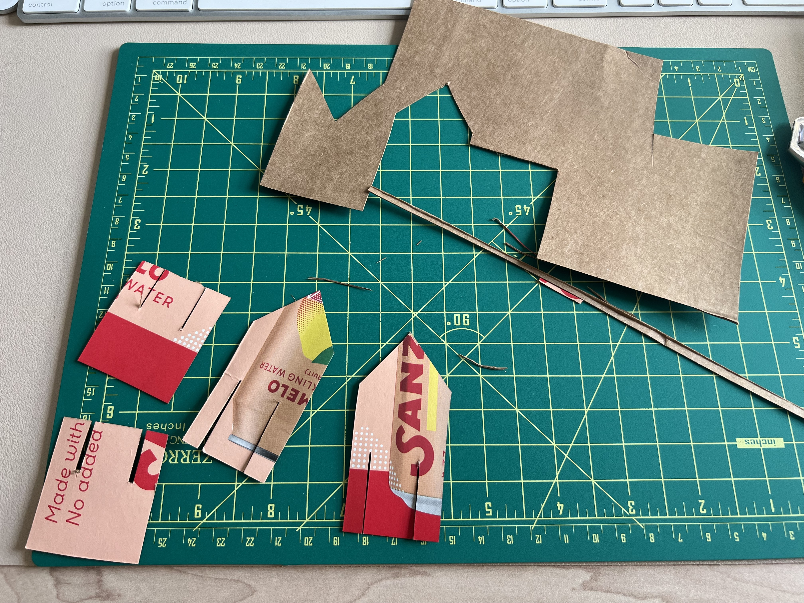
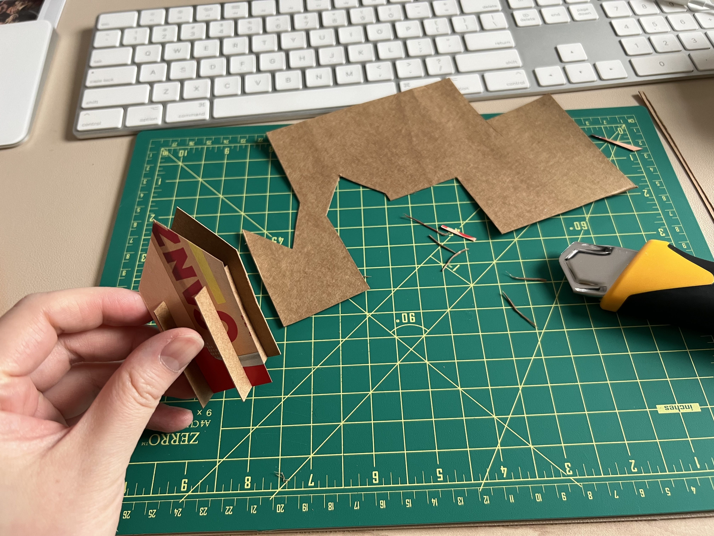
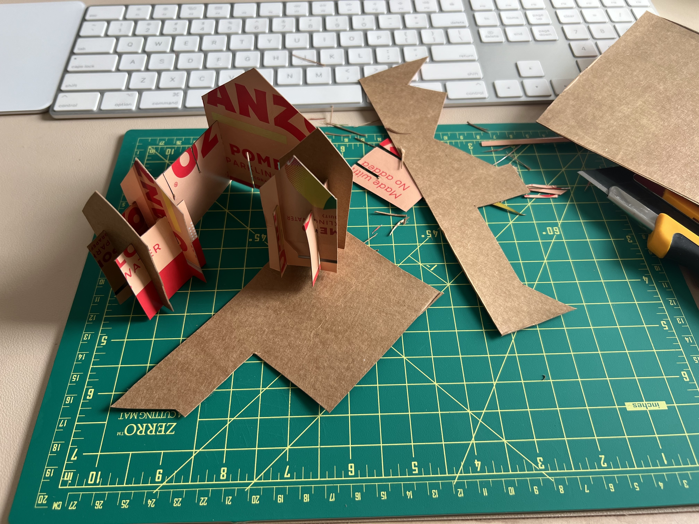
Inspo from:
But it soon felt a little boring after I tried to 'build a village', so I shifted gears and thought about what can I make with 30 pieces that are similar..?
Prototyping
 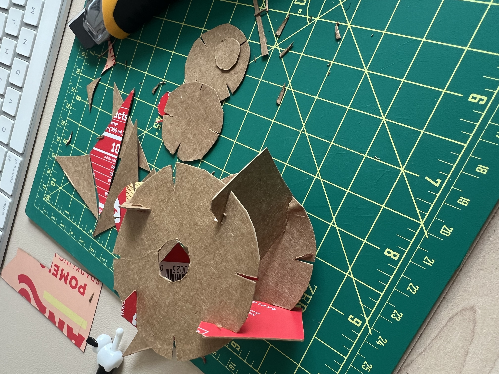
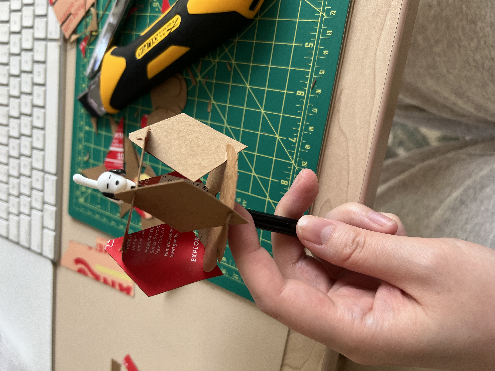
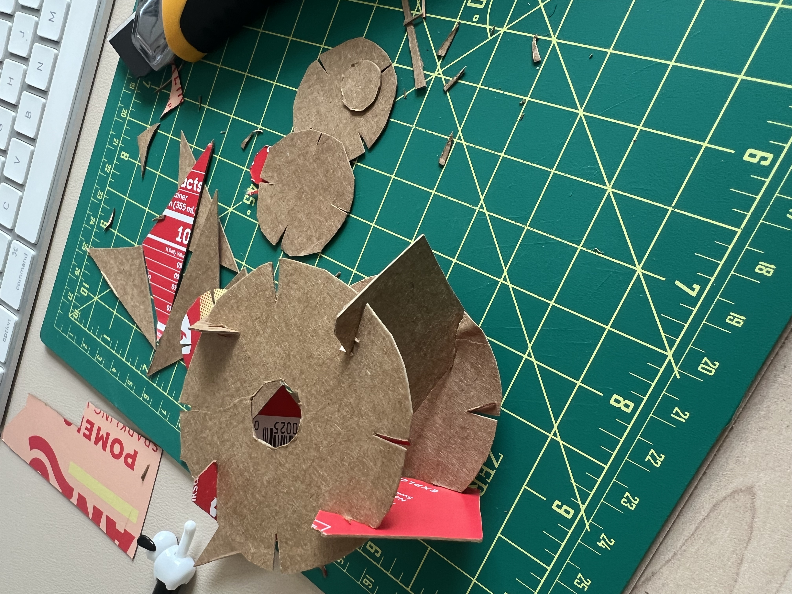
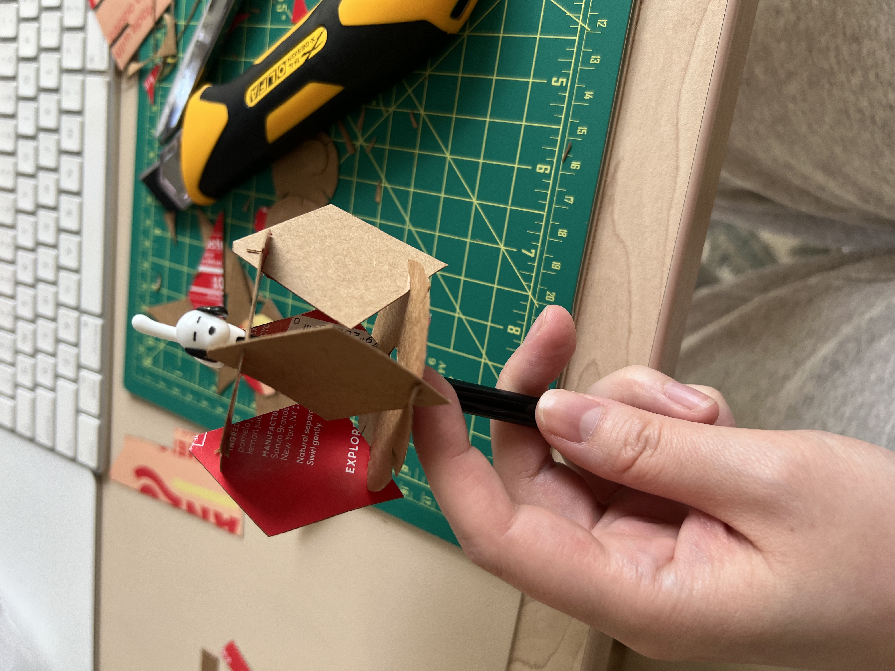Designing
I also wanted to sneak in a stop motion animation of a ball dropping and bouncing back up into the 30 pieces. I thought my daughter would enjoy that.
Learnings:
+ cardboard was about 4mm thick
+ I had pieces that were between 7x14in and 8.5x21in
+ I need to consider edges of the cardboard when cutting because they were thinner from the folds of the boxes
- I initially made the circle too big in diameter and had to size down at the lab when I realized my circle was bigger than my carboard piece. I must have made a measurement mistake when designing. Luckily it was an easy fix.
- my 30 piece slots were also too wide to fit the amount of cardboard I had, another mismeasurement when designing. So I had to reduce their size as well
 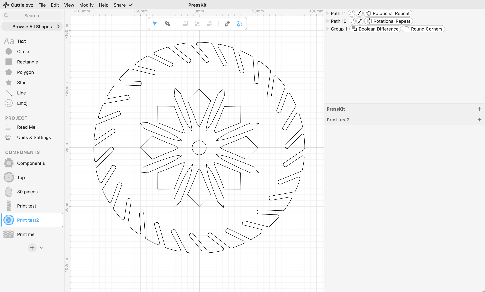
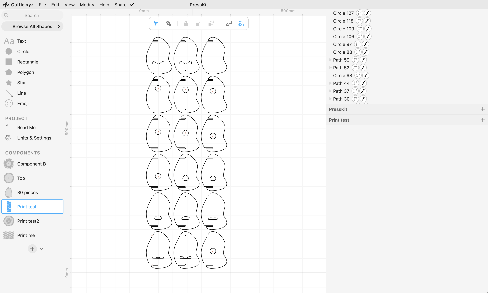
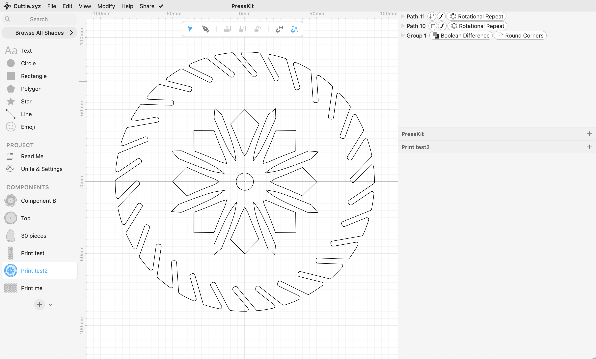
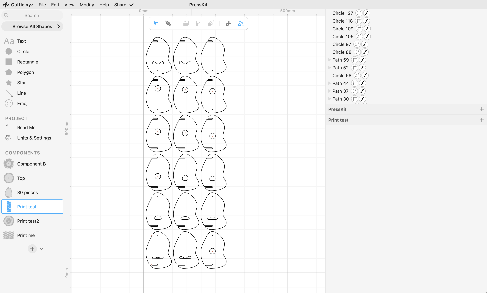Printing
What I did
1/create a test cut template with varying thicknesses
2/test out the laser machine settings
- 20s, 50p, 50f (needed to run the test twice to cut through)
- 20s, 60p, 50f (increasing the power caused more burning, didn't cut through)
- 10s, 50p, 60f (SUCCESS!!!)
3/tested out the best 'pressfit' of the cuts. I was debating between 3.2 and 3.4/3.6
4/decided on 3.2 and adjusted all of my cuts in my design
5/ready to print!
Learnings:
+ making test 'cut' thickness pieces asap, it could influence the design
+ the laser machine is very cool
- should have worn a mask, I felt the smoke in my nose, or maybe that's what the cardboard smelled like

 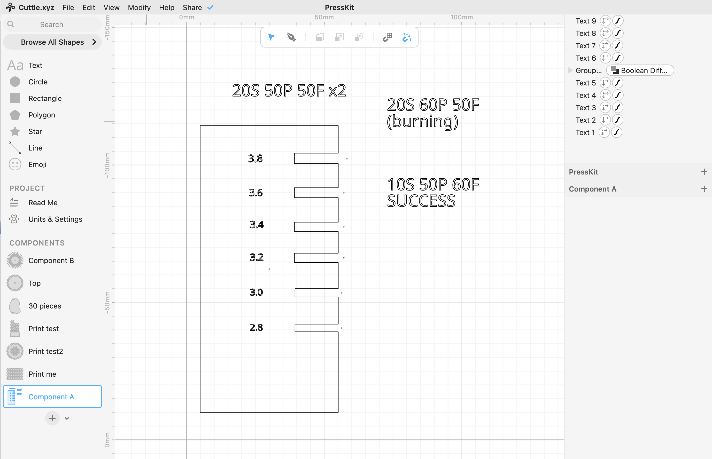
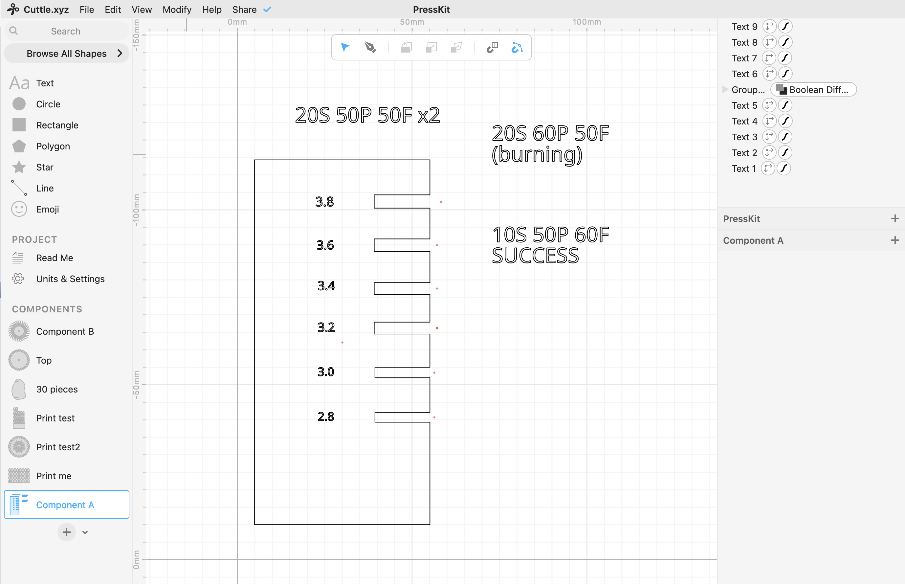I should have chosen a cutfit that wasn't so tight... it made it diffult to assemble the pieces and crunched up the cardboard. I was over worried about the shake test, but I'm pretty sure at 3.6, the pieces wouldn't have fallen out.

Lucky me, when I was done printing, it was pouring rain outside...

Final
Exactly how I expected it to look, BUT because I had so many pieces of cardboard I couldn't really see the stop motion animation I created in the 30 pieces.
If I were to do this again, I would use a thinner board and a larger circle, maybe have the stop motion animation be on the outside of the spinner rather than inside.